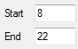
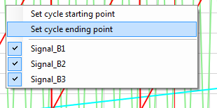
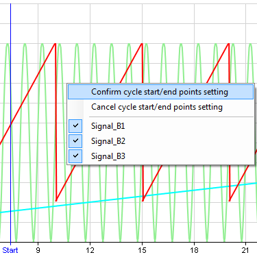

By default, a cycle is played from the beginning to the last sample value. This is not mandatory since user can define the part of the cycle that will be played. Then cycle will no longer be played from the beginning to the end but from the starting and/or ending points defined by the user.
Even better, user doesn’t necessarily need to define both starting and ending points. If only the starting point is defined, then cycle will be played from this point to the end. Alternatively, if only the ending point is set, cycle will be played from the beginning to this ending point.
There are two methods to define cycle starting and ending points.
The numeric method: simply change the value of ‘Start’ and ‘End’ fields. Value of those fields must be time in second.

If values set are different than actual cycle beginning and ending points cursors appear in the graphic showing current cycle starting and ending points.

The second method consists in positioning those cursors directly into the graphic.
To do so, right click in the graphic and click ‘Set cycle starting point’ to set the starting point or ‘Set cycle ending point’ for the ending point.

Then place the cursor at the position you want the cycle to start or end by clicking this position into the graphic.
Once that position defined, right click again into the graphic to get the contextual menu and click ‘Confirm cycle start/end points settings’ to confirm starting or ending position.

If you click ‘Cancel cycle start/end points settings’, the cursor goes back to the previous position defined if any. Otherwise it simply disappears and starting or ending are either the beginning or the end of the cycle.
Created with the Personal Edition of HelpNDoc: Easily create Help documents